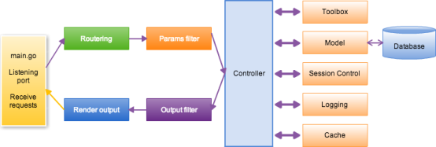

学习golang开发时接触到了beego开发框架
项目地址https://github.com/astaxie/beego/
项目文档https://beego.me/docs/intro/
rest API接口开发
web开发
后端服务
cache缓存（ file、memcache、memory 、 redis ）
config解析配置文件（ ini、json、xml、yaml）
context是HTTP 请求中，request 和 response 的进一步封装
httplibs模拟客户端发送 HTTP 请求
logs日志（ file、console、net、smtp）
orm（mysql,sqlite, Postgres ）
session使用基于cookie的用户会话管理（memory、file、Redis 、 MySQL）
toolbox健康检查、性能调试、访问统计、计划任务

├── conf
│ └── app.conf
├── controllers
│ ├── admin
│ └── default.go
├── main.go
├── models
│ └── models.go
├── static
│ ├── css
│ ├── ico
│ ├── img
│ └── js
└── views
├── admin
└── index.tpl
$ go get -u github.com/astaxie/beego
$ go get -u github.com/beego/bee
# 如果您还没添加 $GOPATH 变量
$ echo 'export GOPATH="$HOME/go"' >> ~/.profile # 或者 ~/.zshrc, ~/.cshrc, 您所使用的sh对应的配置文件
# 如果您已经添加了 $GOPATH 变量
$ echo 'export PATH="$GOPATH/bin:$PATH"' >> ~/.profile # 或者 ~/.zshrc, ~/.cshrc, 您所使用的sh对应的配置文件
$ exec $SHELL
$ cd $GOPATH/src
$ bee new hello
$ cd hello
$ bee run
Windows 平台下输入：
>cd %GOPATH%/src
>bee new hello
>cd hello
>bee run
package main
import (
"github.com/astaxie/beego"
)
type MainController struct {
beego.Controller
}
func (this *MainController) Get() {
this.Ctx.WriteString("hello world")
}
func main() {
beego.Router("/", &MainController{})
beego.Run()
}
把上面的代码保存为 hello.go，然后通过命令行进行编译并执行：
$ go build -o hello hello.go
$ ./hello
一旦程序开始运行，您就可以在浏览器中打开 http://localhost:8080/ 进行访问。
停止服务的话，请按 Ctrl+c
下面为 windows 下的快捷操作批处理文件：
在 %GOPATH%/src 目录下分别创建文件 step1.install-bee.bat 和 step2.new-beego-app.bat。
step1.install-bee.bat 文件内容：
set GOPATH=%~dp0..
go build github.com\beego\bee
copy bee.exe %GOPATH%\bin\bee.exe
del bee.exe
pause
step2.new-beego-app.bat 文件内容：
@echo 设置 App 的值为您的应用文件夹名称
set APP=coscms.com
set GOPATH=%~dp0..
set BEE=%GOPATH%\bin\bee
%BEE% new %APP%
cd %APP%
echo %BEE% run %APP%.exe > run.bat
echo pause >> run.bat
start run.bat
pause
start http://127.0.0.1:8080
依次点击上面创建的两个文件即可快速开启 beego 之旅。
以后只需要到您的应用目录下点击 run.bat 即可。
类似框架Beego Buffalo Echo Gin Iris Revel go-restful
开源项目参与贡献需要提PR，开发要在develop 分支
beego与gin框架对比与选择
特性 | beego | gin |
MVC | 完整支持 | 需要自己实现 |
路由 | 支持正则 | 不支持正则 |
Session | 支持 | 需要额外包 |
性能跑分 | 良 | 优 |
其他特性 |
|
|
适用场景 | 业务复杂 快速成型 | 性能瓶颈 |
|
|
|